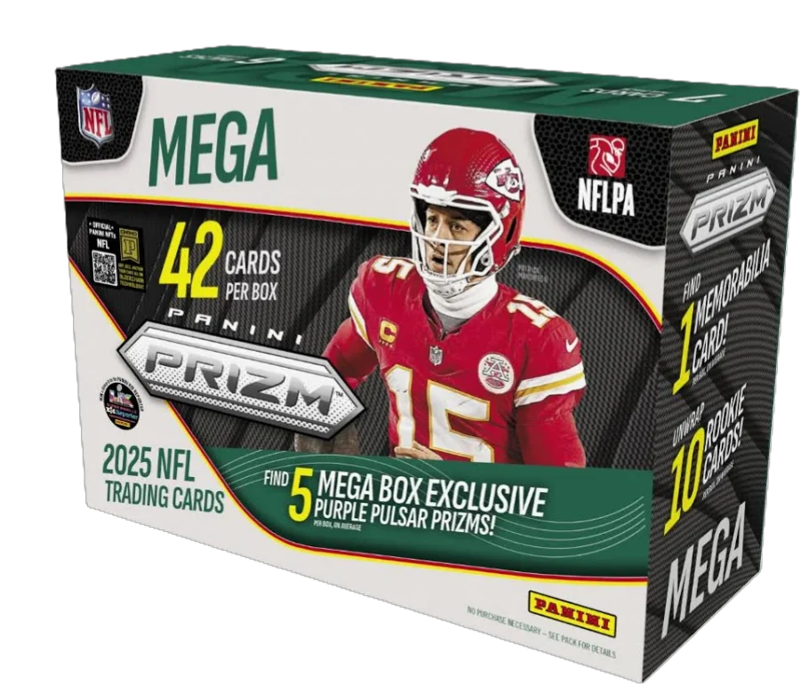

Panini is a company that to my knowledge primerily focuses on sports as well. however, to create sports cards with logos of teams they must have a licence for distibuting products of NFL, NBA, or MLB. for a while they focused on football because that was the licence they owened. Now they lost that licecne and cannot have those logos and team names which makes them less desirable that topps

This box of Panini Prizm was the last to feature team names and logos as it was made during the transition of the licence to topps. Panini has many other product like that run for other sports like baseball as well.
Some of the better known lines include the Donruss, and Donruss optic sets of cards. they have many more such as; Pheonix, elite, score, score-a-treat and more
you can find this product at most retial locations similarly to topps including walmart, target, even barnes and noble, etc.
retail locations can be hard to find because similarly with pokemon there are scalpers, people who will buy all the
stock to resell at a higher price. however stores as of lately have been working pretty hard to avoid this
and at least with sports cards it has become easier to find them. especially with the "hype"
of panini dying down
You can find out more at The Panini Website as well as purchase directly from them.